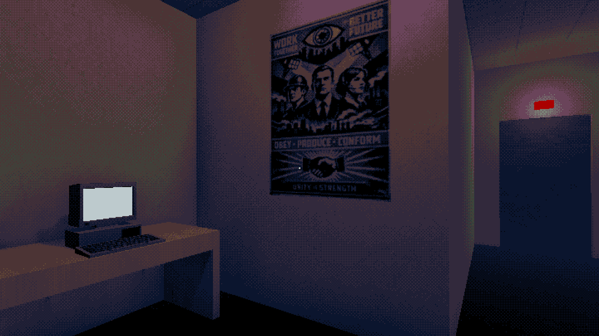
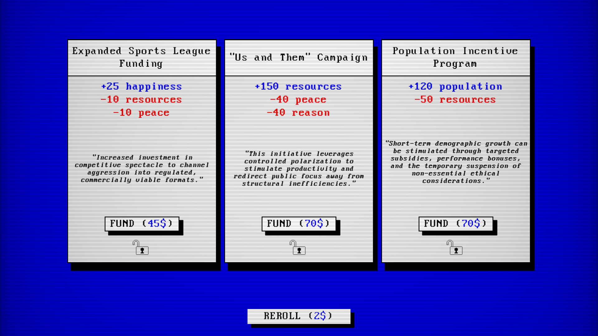

Done is A Wonderful Feeling
July 10, 2026
Today I released Planet Flipper.
It launched with a little over 450 wishlists. To most people that's nothing. To a solo developer working a full-time job and making games after the kid is in bed, it feels huge.
Shipping a game is immensely satisfying, no matter how small or incomplete the final product may seem in hindsight.
For about ten weeks my evenings looked more or less the same. Put the kid to bed, sit in front of the computer, and slowly chip away at the project.
One of the reasons I managed to finish it so quickly was that I stood on the shoulders of my previous mistakes. I reused A LOT of code from earlier projects, along with one very special "asset" from my previous unfinished game. Some Youtubers even noticed it. Let's call it an Easter Egg.
Obviously reusing code meant I could spend less time solving problems I'd already solved and more time making the game itself. I'm slowly building my own little toolbox. A reusable Settings menu, lots of helper functions and even a keybinding screen that I can easily add to new games. Thank God I'll never have to waste time on that again.

Planet Flipper is deliberately a little... obtuse. Very little is explained. Players are encouraged to experiment, discover mechanics for themselves, and uncover hidden events triggered by their actions. I like games that trust the player and barely give anything away. Whether I got the balance right is another question entirely :)
When I started the project I was heavily inspired by Mike Klubnika's games, particularly The Other Side and Carbon Steel. I still think about them from time to time. Not only the endings are memorable, but the whole experience stayed with me for a long time. That feeling of isolation, the constant pressure, the sense that you're participating in something much larger than yourself. I don't think I fully captured that atmosphere, but aiming for it certainly shaped my game.
There's also a more cynical side to Planet Flipper. I've become increasingly cynical about politics and geopolitics over the years (who hasn't?). Watching the world carry on with business as usual while wars rage elsewhere leaves me with the uncomfortable feeling that ordinary people are little more than spectators. I mean, a World fucking Cup going on while wars are raging up and down is just wild.
I wanted some of that feeling to seep into the game. Not as a political statement, but as part of its atmosphere.

Well, before I wrap up I'd like to thank a few people:
To my wonderful wife, who supports every strange little idea I decide to pursue.
To my friend Smokey, who somehow found time to playtest despite juggling work and his own projects.
And to every content creator who accepted a key, played the game, and even made videos about it. You can find them here.
THANK YOU.
Now on to the next project!